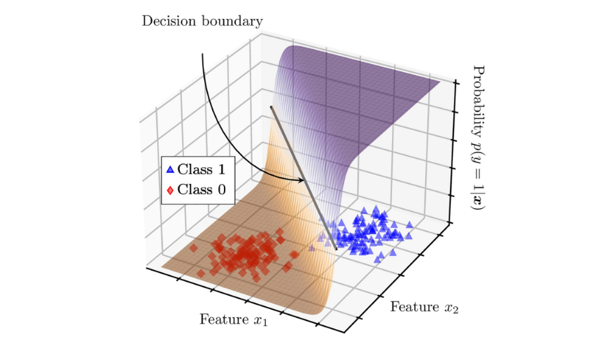
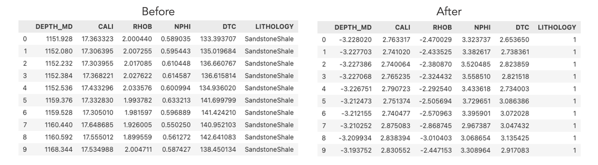
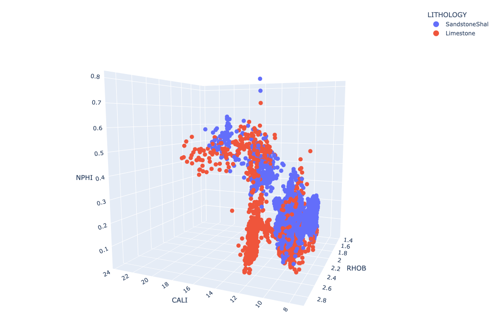
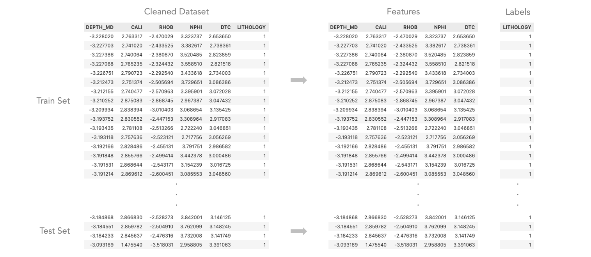

Regression
Overview
-
Define and explain linear regression?
Linear Regression is a statistical method used to model the relationship between a dependent variable and one or more independent variables. It assumes a straight-line relationship and is expressed as:\( \begin{align*} Y = \beta_0 + \beta_1X_1 + \beta_2X_2 + ... + \beta_nX_n + \epsilon \end{align*} \)
Where:- \( Y \) is the dependent variable (target)
- \( X_1, X_2, ..., X_n \) are the independent variables (features)
- \( \beta_0, \beta_1, ..., \beta_n \) are the coefficients/weights
- \( \epsilon \) is the error term (residual)
- Linear regression is trained by minimizing the Mean Squared Error (MSE):
\( \text{MSE} = \frac{1}{n} \sum_{i=1}^n (y_i - \hat{y}_i)^2 \)
- The optimal coefficients \( \beta \) are estimated using methods like Ordinary Least Squares (OLS) or Gradient Descent.
- Once trained, the model predicts outcomes by plugging input feature values into the learned linear equation.
-
Define and explain logistic regression?
Logistic Regression is used for classification problems where the output is categorical (e.g., 0 or 1, True or False). Instead of fitting a straight line, it uses the Sigmoid function to output probabilities between 0 and 1:\( P(Y=1 | X) = \frac{1}{1 + e^{-(\beta_0 + \beta_1X_1 + \beta_2X_2 + ... + \beta_nX_n)}} \)
Example of Logistic Regression.(Source)
How the model is trained:
- Logistic regression is trained using Maximum Likelihood Estimation (MLE), aiming to find the coefficients that maximize the likelihood of observing the given outcomes.
-
The loss function used is Binary Cross-Entropy:
\( \text{Loss} = -\frac{1}{n} \sum_{i=1}^n [y_i \log(\hat{y}_i) + (1 - y_i)\log(1 - \hat{y}_i)] \)
How it makes predictions:
- The model computes the probability of the output belonging to class 1.
- If the predicted probability exceeds a threshold (e.g., 0.5), the prediction is class 1; otherwise, it is class 0.
- This allows logistic regression to separate data into different classes based on probability thresholds.
-
How are they similar and how are they different?
Similarities:- Both linear and logistic regression analyze relationships between independent and dependent variables
and use coefficients (
β) to determine their impact.
- Linear regression predicts continuous values, while logistic regression predicts probabilities for classification.
- Linear regression fits a straight line, whereas logistic regression uses a sigmoid curve.
- Logistic regression is evaluated using classification metrics like accuracy and F1-score, while linear regression uses RMSE or R².
- Both linear and logistic regression analyze relationships between independent and dependent variables
and use coefficients (
-
Does logistic regression use the Sigmoid function?
Yes, logistic regression uses the Sigmoid function to convert any real-valued number into a probability between 0 and 1. This ensures that the output is always between 0 and 1, making it suitable for binary classification. -
Explain how maximum likelihood is connected to logistic regression?
Logistic regression does not use the least squares method like linear regression. Instead, it uses Maximum Likelihood Estimation (MLE) to find the best coefficients (\(\beta\)).
MLE maximizes the probability that the predicted class labels match the actual labels in the training data. It calculates the likelihood of the observed data given the model parameters and optimizes those parameters to make the predictions as accurate as possible.
Data Preparation
-
Image of before & after cleaning data.
For Logistic Regression Modeling, a subset of data which includes only two label categories was used. The purpose is to classify the lithology of Sandstone Shale and Limestone.
The featues are cleaned and normalized using StandardScaler to ensure all features have a mean of 0 and a standard deviation of 1.The dataset has 4,909 samples included 2,523 samples of Sandstone Shale and 2,386 sample of Limestone.Data before and after cleaning and preprocessing process.
3D visualization of dataset for Logistic Regression modeling.
-
Image of the sample train and test data.
Train - Test splitting is conducted to evaluate the model's performance, in which 80% of the data is used for training and 20% for testing. The visualization of train-test splitting is shown below:Visualization of train-test splitting.
-
How the test train split was created?
Train-test splitting is a fundamental step to evaluate a model's performance. The dataset is divided into a Training Set, which is seen data that provided for model training, and a Testing Set, which acts as unseen data and uses to assess its accuracy.
A common split ratio is 80% for training and 20% for testing, though this can vary depending on the dataset size and problem complexity.
Train test split procedure. (Source)
-
Why it is important to create a disjoint split?
These sets must be disjoint, meaning they should not share any data points, to ensure a fair evaluation. The purpose is evaluate the model's generalization ability, which is need to predict real-world data. On the other hand, if the model were tested on data it had already seen, it would give an overly optimistic accuracy, failing to reflect the generalization ability.
Results
Logistic Regression
The Logistic Regression was trained on training set to predict the lithologies of Sandstone Shale and Limestone.
The accuracy on testing set is 94.4% and the confusion matrix is shown below:
The confusion matrix of the regression model.
Multinomial Naïve Bayes
The Multinomial Naïve Bayes was trained the same training set and evaluated with defined testing set. The accuracy on testing set is 92.06% and the confusion matrix is shown below:
The confusion matrix of the Multinomial Naïve Bayes model.
The performance metrics of Linear Regression and Multinomial Naive Bayes models.
Conclusions
What did you learn (and/or what can you predict here) that pertains to your topic?
Deliverables
For your reference, all external links are provided below: